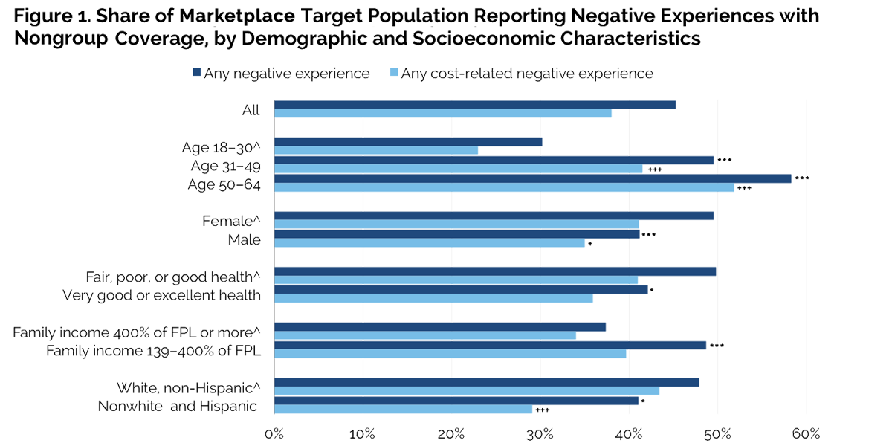

|  |
|
||||||||||||||||||||||||||||||||||||||||||||||||
Prior Experience with the Nongroup Health Insurance Market: Implications for Enrollment under the Affordable Care Act
Dana Goin and Sharon K. Long
The nongroup health insurance market has a bad history—high costs, restricted access, and limited benefits1—that the Health Insurance Marketplaces (“Marketplaces”) established by the Patient Protection and Affordable Care Act (ACA) are designed to change. Before the ACA, consumers unable to obtain employer-based group plans had to navigate a market where products and premiums varied widely, subsidized coverage was rarely available, information about benefits and plan characteristics was typically hard to obtain, and health problems (current or past) often made insurance coverage either unattainable or exorbitantly priced (Tollen et al. 2002).
This is the market in which insurers most fear adverse selection—that a health plan will enroll a disproportionate share of sicker (and more expensive) individuals. As a result, insurers have pursued (and states have allowed) strategies that exclude many people from coverage, charge them higher premiums, or limit benefits sold to them because they are perceived as likely to incur high medical costs (Merlis 2005). Not surprisingly given this history, the share of adults purchasing nongroup coverage has been extremely low, especially among low-income populations (Henry J. Kaiser Family Foundation 2008).
The ACA Marketplaces are designed, along with accompanying regulations, to make the nongroup market more accessible and affordable (including with federal subsidies) and to ensure the coverage sold meets basic standards. For the ACA to succeed, however, Marketplace plans must enroll a much higher proportion of the adult target population—nonelderly persons with family incomes above the Medicaid eligibility cutoff (138 percent of the federal poverty level, or FPL) who are currently uninsured or are purchasing nongroup insurance coverage—than the nongroup market has previously attracted.
This brief addresses how difficult this goal may prove to be, given the high proportion of people who have had negative experiences with the nongroup market of the past—even though the ACA includes major provisions to improve consumers’ knowledge of and ability to select the appropriate plan for themselves and their families.
Focus of the Analysis
We use the June–July 2013 Health Reform Monitoring Survey (HRMS) to examine current and prior experiences with nongroup coverage among the Marketplace target population.2 We define prior experiences as having previously been enrolled in a nongroup plan or having considered purchasing nongroup coverage.
The HRMS asked respondents without nongroup coverage at the time of the survey whether they had ever considered purchasing nongroup coverage. Those who had considered nongroup coverage were then asked the main reason they do not currently have such coverage. Currently uninsured adults in the target population were also asked how easy it would be for them to come up with the money needed to purchase nongroup health insurance for themselves in the pre-ACA market. We distinguish key subgroups who are most likely to have had problems purchasing nongroup coverage or have been dissatisfied with their current nongroup coverage.
What We Found
Most of the target population–both currently uninsured adults and adults who currently have nongroup coverage—has had negative experiences with the nongroup market, most often cost-related. A majority (69.7 percent) of adults in the Marketplace target population say they have had previous experience with the nongroup market (table 1). Of those covered by a nongroup plan, 50.6 percent report being somewhat or very dissatisfied with at least one aspect of their plan. Cost-related reasons are cited most often: 41.9 percent mentioned the premium paid for coverage, 32.6 percent mentioned co-pays or coinsurance, and 24.8 percent mentioned the protection their coverage provided against high medical bills.
Of those with previous nongroup experience who are not currently insured, cost and affordability concerns are cited even more frequently: 62.6 percent report they had not purchased coverage because it was too expensive. Administrative issues are the next most frequently reported reason for not having coverage; 12.1 percent say they found the process too difficult or didn’t know how to apply, and 5.5 percent say they were turned down by an insurance company.
Negative experiences with nongroup coverage are particularly common for adults likely to have high health care costs. Nearly half (45.3 percent) of the adult target population reports negative experiences with the nongroup market, again typically related to cost (figure 1). But adults with higher health care needs are more likely to report negative experiences, including older adults, women (who have higher reproductive and sexual health care needs), and those in less than very good or excellent health.3
Negative experiences are also more common for adults with lower family incomes and racial or ethnic minorities. Nonwhite and Hispanic adults are less likely than white, non-Hispanic adults to report a negative experience with nongroup coverage (41.0 percent versus 47.9 percent), but they are also less likely to report any experience with nongroup coverage (62.1 percent versus 74.3 percent; data not shown).
Most of the uninsured in the adult target population say it would be difficult for them to afford nongroup coverage in the pre-ACA market. More than four out of five are concerned about the cost of nongroup coverage; 83.6 report that it would be “not too easy” or “not at all easy” to afford coverage (figure 2). The share anticipating affordability problems is high across all demographic and socioeconomic subgroups, ranging from 71.1 percent of higher-income adults (those with family incomes at or above 400 percent of FPL) to 89.3 percent of adults age 50–64. Those with family incomes between 139 and 400 percent of FPL are 15.2 percentage points more likely than those with higher family income to report it would be difficult to afford coverage in the pre-ACA market. The share is even higher (91.4 percent) among those uninsured adults reporting prior negative cost-related experiences with nongroup coverage (data not shown).
What It Means
In contrast to low-income uninsured adults newly eligible for Medicaid under the ACA, who have very little experience with the Medicaid program,4 a substantial majority of the nonelderly adults targeted by the ACA’s newly established Marketplaces have prior experience with the nongroup market. Initially, this familiarity could help education efforts. But more than half of those with previous experience report negative experiences with the nongroup insurance market, making outreach and education efforts much more difficult.
The frequency of prior negative experiences with the nongroup market demonstrates the critical need for outreach focused on the lower-cost policies available in the new Marketplaces—a need most felt by vulnerable adults who are likely to have high health care costs and have fared the worst in the pre-reform market. In addition, outreach and education efforts must highlight affordability to be most successful. This is especially true for adults with family incomes between 139 and 400 percent of FPL, who are likely eligible for federal subsidies and may overestimate the cost of nongroup coverage based on pre-ACA experiences.
More broadly, continuing concerns about the affordability of coverage are likely to remain a significant roadblock to universal health insurance coverage. Over 80 percent of the uninsured adults targeted by the Marketplaces believe that if they had had to purchase a nongroup plan in summer 2013, it would have been “not at all easy” or “not too easy” to afford. This perception will almost certainly discourage many from seeking Marketplace coverage, even some of those eligible for federal subsidies.
References
Henry J. Kaiser Family Foundation. 2008. “How Nongroup Health Coverage Varies with Income.” Menlo Park, CA: Henry J. Kaiser Family Foundation.
Merlis. Mark. 2005. “Fundamentals of Underwriting in the Nongroup Health Insurance Market: Access to Coverage and Options for Reform.” Washington, DC: National Health Policy Forum.
Tollen, Laura, Robert M. Crane, Ruth Liu, and Steve Zatkin. 2002. “Perspective: The Nongroup Market as One Element of a Broader Coverage-Expansion Strategy.” Health Affairs W383–86.
About the Series
This brief is part of a series drawing on the Health Reform Monitoring Survey (HRMS), a quarterly survey of the nonelderly population that is exploring the value of cutting-edge Internet-based survey methods to monitor the Affordable Care Act (ACA) before data from federal government surveys are available. The briefs provide information on health insurance coverage, access to and use of health care, health care affordability, and self-reported health status, as well as timely data on important implementation issues under the ACA. Funding for the core HRMS is provided by the Robert Wood Johnson Foundation, the Ford Foundation, and the Urban Institute.
For more information on the HRMS and for other briefs in this series, visit www.urban.org/hrms
About the Authors
Dana Goin is a research associate and Sharon K. Long is a senior fellow in the Urban Institute’s Health Policy Center.
The authors gratefully acknowledge the suggestions and assistance of Linda Blumberg, Steve Zuckerman, Felicity Skidmore, and Fiona Blackshaw.
Note 1 See Gary Claxton, Larry Levitt, Karen Pollitz, and Anthony Damico, “Why Premiums Will Change for People Who Now Have Nongroup Insurance,” Kaiser Family Foundation perspectives, February 6, 2013. 2 In states that implement the ACA’s Medicaid expansion, most adults with family incomes at or below 138 percent of FPL will be eligible for Medicaid coverage. 3 Because of small sample sizes, we compare those who report very good or excellent health with those in good, fair, or poor health. 4 See Genevieve M. Kenney, Michael Karpman, and Sharon K. Long, “Uninsured Adults Eligible for Medicaid and Health Insurance Literacy,”. |
|||||||||||||||||||||||||||||||||||||||||||||||||

 |
 |
 |